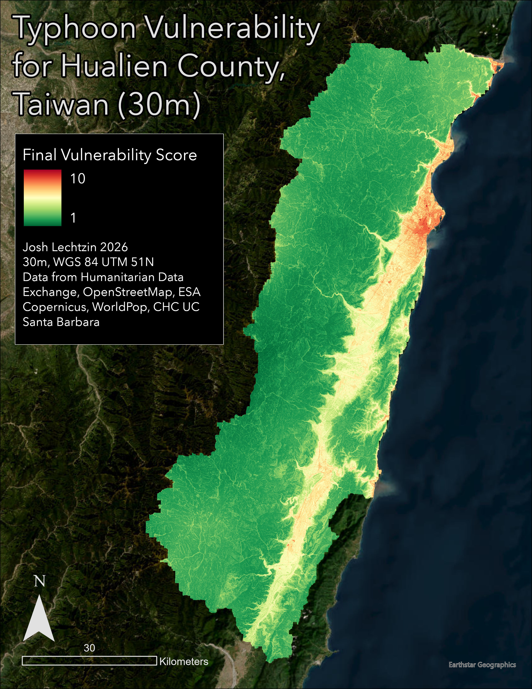

Typhoon Vulnerability Index
Using environmental and infrastructure data, I developed a composite vulnerability index of risk to damages from typhoon events in Hualien County, Taiwan. All processing was done in ArcGIS Pro. This was my final term project in the course GIS for Sustainable Development.
View details